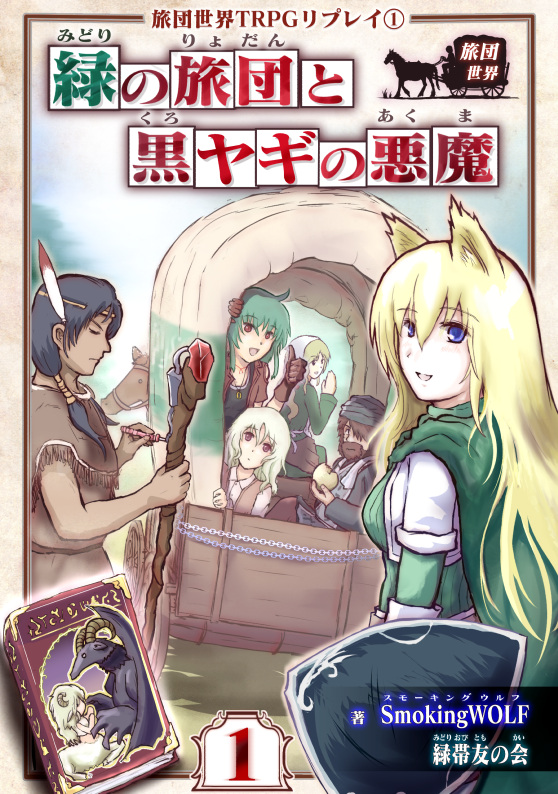
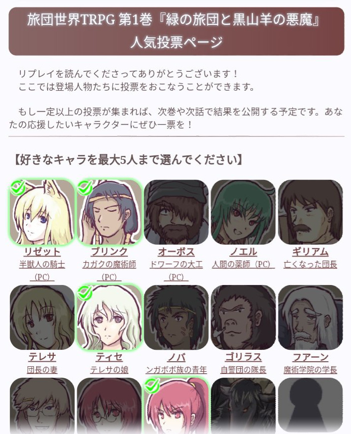

シルバーセカンド開発日誌
2020年03月
■
2020-03-21 (土) 片道勇者ノベライズ裏資料動画4▼【片道勇者ノベライズ裏資料動画4】
ノベライズ裏資料「仲間同士の会話見本」の第4回を公開しました！
今回は「フリーダ王女×ヴィクター王」、「フリーダ王女×黒騎士デュークガルツ」
「フリーダ王女×魔王」の3つ分！
【Youtube動画 片道勇者ノベライズ裏資料 第4回】
コメントも見たい人は【ニコニコ動画版】もございます。
【フリーダ王女×ヴィクター王】
フリーダ王女とヴィクター王は義理の親子です。
フリーダは元スラム街暮らしでしたが、それをヴィクター王に拾われました。
元々この二人、同じ城に住みながらさほど関わりはありませんでしたが、
色々あって親友と一緒に死んでしまった後に
自分しか生き返らせてもらえなかったことを逆恨みして、
フリーダ王女はヴィクター王にあまりいい印象を抱いていません。
その辺りの詳しい話は『片道勇者開発記』のサイドストーリーで語られています。
【フリーダ王女×黒騎士デュークガルツ】
黒騎士デュークガルツはフリーダの剣術の師であり近衛騎士でした。
が、勝手に『闇』を倒しにデュークガルツが出かけたのが間接的な原因となって、
フリーダ王女は命を落としてしまいます。
デュークガルツはそれを聞いて、自分の責任を感じています。
これも『片道勇者開発記』のお話です。
デュークガルツは、生きている（？）人の中では、
最もフリーダ王女と親しい人物と言えるかもしれません。
一緒にいれば、フリーダ王女はデュークガルツを頼りにするでしょう。
王女と、負い目を感じている武人の騎士、という構図は個人的に好きなところです。
【フリーダ王女×魔王】
変な組み合わせですが、この二人も『片道勇者開発記』で結構、話をしていたりします。
魔王は捕らわれのフリーダに裏事情の一部をすでに話しているので、
フリーダ王女も魔王のことを完全な敵としては見ていません。
が、お互いの役割を果たすために、フリーダは魔王を倒すつもりでいます。
お互い通じ合いそうな繋がりが見えているのに仕事で殺し合わなきゃいけない関係、好きです。
この資料から作られたノベライズが気になる方はこちら！
↓

片道勇者 滅びの闇と繰り返す英雄
Amazonページへ
Kindle版 ￥1,386 / 書籍版 ￥1,540
これで会話見本は21本中の10本！
動画はまだまだ続きます。次回もお楽しみに！ ■
2020-03-07 (土) 新刊の『旅団世界』シリーズ、先行リリース！▼【『旅団世界TRPGリプレイ』シリーズ、先行リリース！】
ということで、ゲームを作れない時間を主に使って
こっそり作っていた新刊が本日発売です！
当初はエイプリルフール公開予定だった新刊ですが、
自宅待機の方々も多い現状をふまえて、
3週間ほど前倒しで先行リリースさせていただくことになりました！
購入ページはこちら！
↓
旅団世界TRPGリプレイ①
～緑の旅団と黒ヤギの悪魔～ （Amazon販売ページ）

Kindle本 税込￥942 Kindle Unlimitedご加入の方は￥0！
【内容紹介】
まず、これは【TRPGリプレイ】本です！
このサイトのTRPGリプレイをご存じの方は一瞬で想像が付くと思いますが、これは、
・私を含めた複数人の人間が一同に集まって、
・私が説明するシナリオに対し、プレイヤーの人がキャラクターを演じ、
試行錯誤したりミッションをこなしたり能力を使ったり
いちかばちかの挑戦でサイコロを振ったりしてお話を進めていく。
というプレイ風景をお話としてまとめたものです。
【TRPGプレイ風景の見本（※これはリアルのですが、私たちはオンラインで遊んでいます）】

これまでも、自作ルールの『＜自家製＞片道勇者TRPG』や、
冒険企画局さま版の『片道勇者TRPG』のリプレイを作ってきていましたが、
今回も同じ流れで自作のルール『旅団世界TRPG』を用意し、
割といつも通りなスモーキングウルフワールドが展開されています！
【世界設定】
ということで世界設定から！
まず、「これシルフェイドとか片道勇者と関係あんの？」
というのが一番気になるのではないかと思いますが、
この作品はなんと、『片道勇者』の世界とつながっています！
もっと正確には『＜自家製＞片道勇者TRPGリプレイ』の世界の、
何年か後の世界となっています。
（というのも、そのリプレイで少しだけ登場したNPCである
テレサ（シノビと呼ばれていた人妻）とギリアムの
設立した旅団がプレイヤーの所属先なのです）
「他のプレイヤーキャラはどこいったんだよ！」
という話は1巻では触れられませんが、2巻から
こっそりそれっぽい人が出たりするかもしれません。
【内容の雰囲気について】
リプレイの内容は参加プレイヤーの人によって左右される部分もありますが、
おおまかな流れはだいたい「スモーキングウルフ味」です！
ときどきゆったり、ときどきシビア、ときどきおかしく、ケモ耳＆獣人多め、
変なところで生々しさアリ、そんな世界を目指しております。
ボリュームの目安は、Amazon換算で 838 ページ分！
前の『ゲーム開発者の地図』でも466ページ分とたいがいでしたが、
今回はとにかくお話をたっぷり見たい人向けのコンテンツです！
TRPG語でいう「1キャンペーン分」まるごとお楽しみいただけます。
つまり、「なんでもいいからスモーキングウルフ味のモノを喰いてぇ！」
というファンの方の需要をボリューム重視で満たす方向性の商品です！
1ページ1ページに新しい発見が詰まってたり、
5分に1回笑えるほどの密度はありませんが、
皆さんにとっても気楽に読み続けられそうなくらいの面白さはある……
と、いいなと思っております！
私でも15回くらいは飽きずに読めましたので、その目安では品質基準をクリアしております。
（私の場合、色々編集して良くしたり、いらないところをカットした結果、
同じ本を10回以上最初から最後まできっちり読んで耐えられる面白さなら
ひとまず品質クリア、という基準にしています）
【基本ルールは無料公開されています！】
個人作成のTRPGルールなんて使う人いるのかな！？
と思いつつ、旅団世界TRPGのルールはWebで無料公開しております！
『旅団世界TRPG 基本ルールページ』
https://smokingwolf.github.io/trpg/ryodan_sekai_trpg/
ルールページはスマートフォンにも対応！
入力可能なPDFキャラクターシートもご用意しておりますので、
必要に応じてご利用ください。
【このシリーズの今後について】
現状、短期的な生計を立てないといけなくなっているので、
小粒コンテンツとしてこのリプレイを今後、
定期的に出させていただきたいと考えております！
とりあえずは、このシリーズを1年に1冊ペースくらいで
ゲームを作れない時間を使って作っていけたらいいなと考えております。
やっぱりメインの活動はデジタルゲーム開発ですから、
TRPGリプレイはあくまで副業としてやっていく感じです。
本シリーズで得られた収益は、ゲーム開発資金として
使わせていただきたいと思っておりますので、
応援ついでに冒険のお話に飢えてる方はよければぜひどうぞ！
【人気投票もやっております！】
いつもTRPGリプレイでやっている「人気投票」ですが、
この本の最後にもしっかり用意されています！
今回はまとめて投票したり、コメントできたり、後からの書き換えも
できるようにしておりますので、プレイヤーのみんなへの
応援などございましたら、よければご投票、お待ちしております！
【今回の投票ページ 見本】 （本の最後あたりから投票ページへジャンプできます）

ひとまずのご紹介は以上です！
当初は4/1に正式発表予定でしたので紹介が間に合っていませんが、
4/1に向けてのチュートリアルリプレイ（本の1話目）の公開や、
公式ページの用意もしていきます。
これから始まる『旅団世界TRPGリプレイ』シリーズ、
気になる方はぜひご覧ください！
旅団世界TRPGリプレイ①
～緑の旅団と黒ヤギの悪魔～
■
2020-03-04 (水) 片道勇者ノベライズ裏資料動画 3▼【片道勇者ノベライズ裏資料動画3】
週の途中ですが、ノベライズ裏資料「仲間同士の会話見本」の第3回を公開しました！
今回は「薬師ネムリ×魔王」「薬師ネムリ×妖精イーリス」
「フリーダ王女×傭兵パンティ」の3つ分！
【Youtube動画 片道勇者ノベライズ裏資料 第3回】
コメントも見たい人は【ニコニコ動画版】もございます。
【薬師ネムリ×魔王】
あまりかかわりのない二人ですが、
ネムリは魔王から詳しい話を聞くと、それは立派だと感心するでしょう。
魔王の方はネムリのことを特に意識してはいませんが、
ほめられると内心、ちょっとキュンとしています。
ちなみにノベライズだと魔王が露骨にキュンとしています。
褒められて照れるというか焦る魔王は必見！
【薬師ネムリ×妖精イーリス】
原作中でも普通に仲のよい二人です。
いちおう女の子同士なので話が合う部分も多いでしょう。
『仲良しのクスリ』はネムリの母から直伝の製法です。
「落ち着かせる理力を持った薬草から作られている」、
という裏設定がこっそりありましたが、
今のところ原作含めどこにも使われていないネタだったりします。
片道世界では、植物にも「理力」がこもっているんですね。
（でないと、草を食べるだけであんなに回復しないはずです）
【フリーダ王女×傭兵パンティ】
話しているところがあんまり想像付かない組み合わせです。
フリーダ王女はパンティの名に特に動じることもないので、
パンティとしてはやりにくいだろうなあ、と考えています。
ノベライズでも普通にパンティスルーされていました。
とはいえ、男キャラが主人公を差し置いてヒロインキャラと仲良くするのは
ライトノベルの基本文法的にまずかろうと思うので、
それはそれで妥当な立ち位置だったと思います。
この資料から作られたノベライズが気になる方はこちら！
↓
片道勇者 滅びの闇と繰り返す英雄
Amazonページへ
Kindle版 ￥1,386 / 書籍版 ￥1,540
動画はまだまだ続きます。次回もお楽しみに！
以下はいただいた拍手コメントです。
皆さまからのコメント、いつも本当にありがとうございます！
＞小説版本当に良かったです…… .
＞資料動画も拝見していますが（パンティの名前ネタはかなりそのまま採用されてましたね）、
＞やはりWOLFさんの監修もあってこそだと思います。
＞（中略）純粋にファンタジー小説として良質だったのが本当に有り難かったですね。
＞何というか、文章に風格を感じました。紅仗直先生、商業小説はこれが初のようですが、
＞ライターとしてはベテランの方とお見受けしました。
＞イラストレーターさん、担当編集さんも含め、皆さんがそれぞれに素晴らしい仕事をされた
＞結果だと思います。改めて素敵な作品をありがとうございました！
＞お風呂シーンの破壊力はやばかったです（どちらかといえば左側に目が行ってしまった人）
前回紹介したご感想記事 (ｱｰｶｲﾌﾞ)を書いてくださった方からのコメントです。
こちらこそ楽しんでいただけたようで何よりです、ありがとうございます！
ノベライズのライターの方はすごく経験豊富な方で、監修経験もあったり、
色んなプロジェクトでも色々辛い思い出があったとかで
私が無理を言ってもとても親切に対応してくださいました。
なおかつ、編集の方もクオリティ第一主義でやってくださったので、
本文の完成度に関しては関係者の全てがうまくかみ合った奇跡だと感じます。
そしてお風呂シーンは、イラストレーターさんのイラストから
その直後の展開の変化も含め、パワーが強かったですね！（主人公大きい！）
かなり意味のあるお風呂シーンなので、ページがカツカツだった中でも、
「ここ削ってもいいんじゃないです？」とは全く思いませんでした。
価値のあるお風呂シーンとはああいうのを言うのだと思います。 2020年03月
Copyright © SmokingWOLF / Silver Second
 カテゴリ: 片道勇者
カテゴリ: 片道勇者 カテゴリ: 片道勇者
カテゴリ: 片道勇者